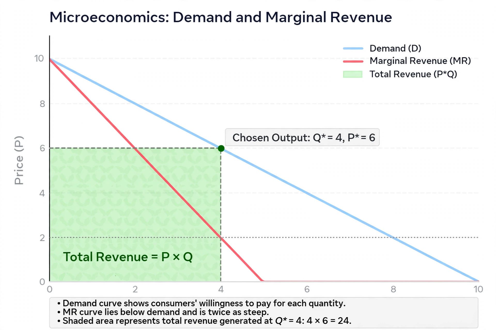

Marginal revenue
Marginal revenue (or marginal benefit) is a central concept of microeconomics that describes the additional total revenue generated by increasing product sales by 1 unit. Marginal revenue is the increase in revenue from the sale of one additional unit of product, although the additional unit may not be "physically" discrete.

Along a linear demand curve, marginal revenue is constant at quantities where marginal revenue is positive, and decreases as output rises beyond that point. In a perfectly competitive market, marginal revenue equals price, because the firm can sell any quantity at the market price; the marginal revenue curve is horizontal.
Definition
Marginal revenue is defined as the change in total revenue divided by the change in quantity sold:
MR = ΔTR / ΔQ = dTR/dQ
where TR is total revenue and Q is quantity. Total revenue equals price multiplied by quantity (TR = P × Q).
Marginal revenue and elasticity
Marginal revenue is related to the price elasticity of demand (ε) by the formula:
MR = P (1 + 1/ε)
When demand is elastic (ε < −1), marginal revenue is positive; when demand is unit elastic, marginal revenue is zero and total revenue is maximized; when demand is inelastic, marginal revenue is negative.
Profit maximization
A profit-maximizing firm produces the quantity at which marginal revenue equals marginal cost (MR = MC). This rule applies in all market structures; what differs is the relationship between price and marginal revenue. In perfect competition MR = P, whereas a monopolist faces MR < P and restricts output relative to the competitive level, creating deadweight loss.
See also
References
Pindyck, R. S., & Rubinfeld, D. L. (2013). Microeconomics (8th ed.). Pearson.
Mankiw, N. G. (2014). Principles of Microeconomics (7th ed.). Cengage Learning.